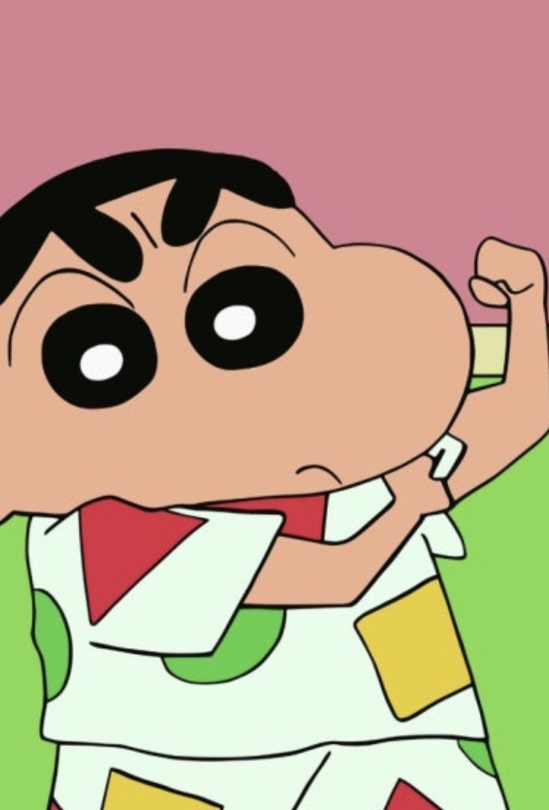

선수 경기력 향상
신체 기능과 움직임을 살펴 경기력 향상에 도움이 되는 요소를 알아보고 싶습니다.
개성이 뚜렷하면서도 사람들과 자연스럽게 어울리고, 어려움 속에서도 유쾌하게 자신의 길을 찾아가는 모습이 저와 닮았습니다.

저는 가끔 제 모습이 짱구와 닮았다고 생각합니다. 개성이 뚜렷하면서도 사람들과 자연스럽게 어울리고, 삶의 굴곡 속에서도 유쾌하게 자신의 길을 나아가는 모습이 저와 닮았기 때문입니다.
짱구는 겉으로는 고민이 없어 보이고 장난스럽지만, 속으로는 여리고 섬세한 면을 가진 캐릭터입니다. 저는 그런 상반된 모습에 매력을 느끼며, 제 자신과도 닮아 있다고 생각합니다.
저 역시 겉으로는 밝고 유쾌해 보이지만, 내면에는 여러 고민과 걱정을 안고 있을 때가 있습니다. 그럼에도 어려움에 머무르기보다 스스로 극복할 방법을 찾고, 행동으로 옮기며 앞으로 나아가려 노력합니다.
저에게 짱구는 밝은 모습 뒤의 섬세함과, 어려움 속에서도 자신만의 길을 찾아가는 태도를 보여주는 존재입니다.
운동과 건강관리부터 스포츠 재활까지, 신체의 움직임을 이해하고 개인에게 적합한 방법을 찾는 데 관심이 있습니다.
신체 기능과 움직임을 살펴 경기력 향상에 도움이 되는 요소를 알아보고 싶습니다.
개인의 체력과 신체적 특성에 맞는 운동과 적절한 운동 강도에 관심이 있습니다.
재활 상태를 객관적으로 평가하고 재부상 위험을 줄이는 방법을 탐색하고 싶습니다.
같은 운동을 하더라도 개인의 체력과 신체적 특성에 따라 운동 효과는 달라질 수 있습니다. 그래서 모두에게 동일한 운동 프로그램을 적용하는 데에는 한계가 있다고 생각합니다.
심박수, 운동량, 반복 횟수, 움직임 등의 데이터를 수집하고 분석해 개인에게 적합한 운동과 운동 강도를 찾고 싶습니다.
제가 특히 관심을 가지고 있는 운동은 요가입니다. 유연성을 바탕으로 몸을 부드럽게 늘리고, 신체의 움직임을 세밀하게 조절한다는 점에 매력을 느낍니다.
스포츠 재활 분야에서는 단순히 부상 후 경과한 시간만으로 복귀 여부를 판단하기보다, 실제 신체 기능과 회복 상태를 기준으로 안전한 복귀 시점을 평가하는 방법을 알아보고 싶습니다.
현장에서 문제를 해결하고, 동아리 활동에서 맡은 역할을 수행하며 소통과 책임감의 중요성을 배웠습니다.
약 1년 · 매장 운영 및 회원 응대
예약 관리, 소모품 교체, 회원 관리 등 매장에서 발생하는 전반적인 업무를 담당하고 있습니다. 혼자 근무하며 방문 회원들에게 서비스를 제공하고, 다양한 문의와 불편 사항에 대응합니다.
근무 초기에는 스크린 기기 조작법과 이용 규칙, 소모품 교체 주기 등에 익숙하지 않아 회원 문의나 갑작스러운 기기 오류에 대응하는 데 어려움이 있었습니다. 이를 해결하기 위해 기기 매뉴얼을 빠르게 숙지하고 자주 발생하는 오류와 소모품 교체 방법을 꾸준히 익혔습니다.
회원들과 원활하게 소통하는 방법을 익혔으며, 예상치 못한 문제가 발생했을 때 상황에 맞게 대처하는 능력을 기를 수 있었습니다.
웨이트 트레이닝 동아리 · 홍보 및 운영 지원
정기 모임 현장을 사진으로 기록하고 활동일지를 작성했으며, 동아리 인스타그램 게시물을 통해 활동을 홍보했습니다. 회장을 돕고 정기 회의에 참여하는 등 동아리 운영도 지원했습니다.
‘리핏’ 동아리와 함께 북한산으로 등산을 갔던 경험이 가장 기억에 남습니다. 평소 헬스장에서 웨이트 트레이닝을 중심으로 활동하다가 자연 속에서 등산하며 기분 전환을 할 수 있었고, 부원들과 더욱 가까워지는 시간을 가졌습니다.
홍보부장을 맡으면서 동아리에 대한 자부심과 애정이 커졌고, 맡은 역할에 대한 책임감도 깊어졌습니다. 이를 통해 단체 활동에서 자신의 역할을 꾸준히 수행하고 공동체에 기여하는 자세의 중요성을 배웠습니다.
운동 관련 자격과 오랜 뮤지컬 경험을 통해 신체 움직임, 표현력, 책임감에 대한 기반을 쌓았습니다.
초등학교 고학년부터 중학교까지 약 5년간 뮤지컬을 배우며 ‘미녀와 야수’, ‘캣츠’, ‘하이스쿨 뮤지컬’ 등 세 차례의 주요 정기 공연에 참여했습니다.
약속된 무대를 위해 자신의 역할을 완성도 있게 수행해야 한다는 책임감을 배웠고, 몸과 목소리로 메시지를 전달하는 경험을 통해 자신감을 키웠습니다.
이 경험은 신체 표현력과 세밀한 움직임 조절 능력을 기르는 밑거름이 되었습니다. 앞으로 요가와 재활·체형 관리 분야에서도 이러한 경험을 바탕으로 사람의 움직임을 세심하게 살피는 지도사로 성장하고 싶습니다.
충분히 이해한 지식을 정확하고 쉽게 전달하며, 상대방이 실제로 도움을 받는 순간에 보람을 느낍니다.
뛰어난 운동 신경과 빠른 습득력, 올바른 자세와 동작을 정교하게 구현하는 능력이 저의 강점입니다.
저는 충분히 이해하지 못한 내용을 섣불리 전달하기보다, 제가 정확하게 이해하고 자신 있게 설명할 수 있는 분야에서 다른 사람에게 도움을 주는 것을 중요하게 생각합니다.
스스로 충분히 숙지한 지식이어야 상대방의 질문에도 정확하고 쉽게 설명할 수 있다고 생각합니다. 제가 알고 있는 지식과 노하우를 전달해 상대방이 내용을 이해하고 실제로 도움을 받는 모습을 볼 때 가장 큰 보람을 느낍니다.
요가는 정확한 자세 정렬과 신체 조절 능력이 중요한 운동입니다. 부정확한 자세는 부상 위험을 높이고 특정 부위에 보상 작용을 유발해 운동 효과를 떨어뜨릴 수도 있습니다.
저는 신체 감각과 동작의 원리를 빠르게 파악하는 능력을 발전시켜, 회원들이 올바른 자세로 운동할 수 있도록 돕는 요가 강사로 성장하고 싶습니다. 나아가 신체 움직임에 대한 이해를 넓혀 재활 분야에서도 전문성을 갖추고 싶습니다.
궁금한 점이나 함께 나누고 싶은 이야기가 있다면 아래 연락 수단을 통해 연락해 주세요.